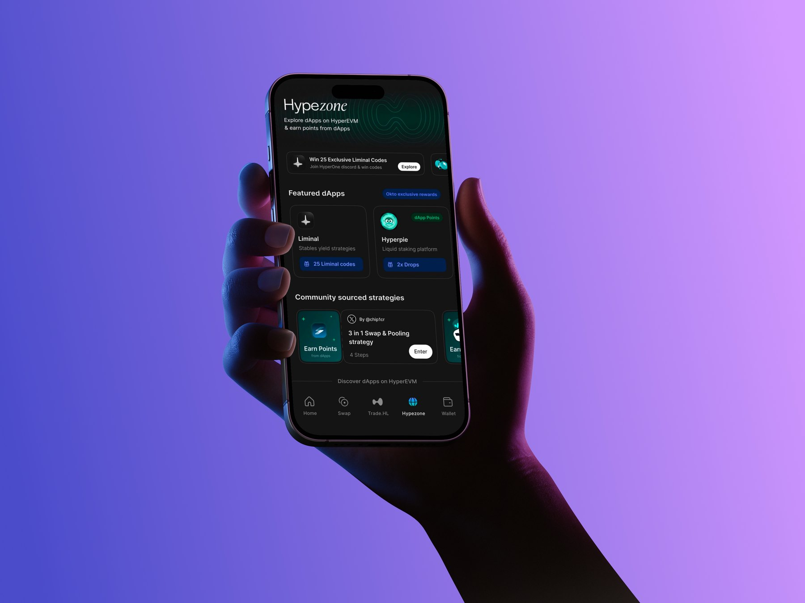
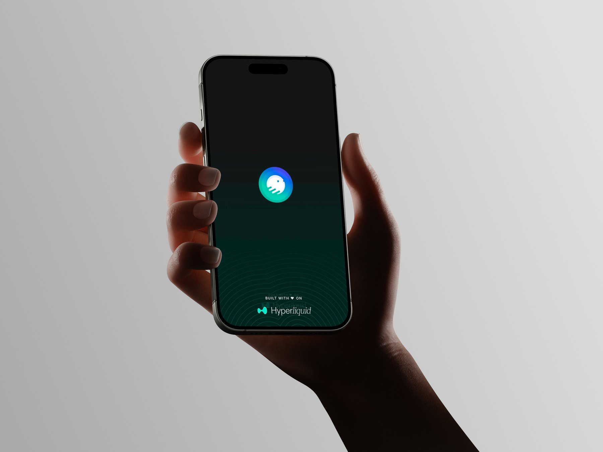
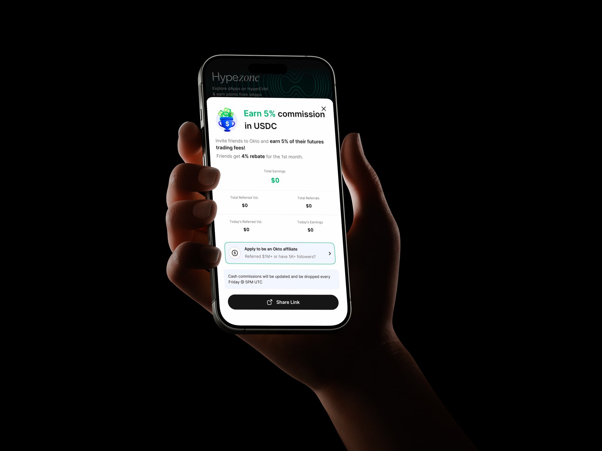

From the multi‑chain maze to one‑tap DeFi.
Rethinking Okto — a self‑custody Web3 trading wallet — so that first‑time users could swap, bridge and earn across chains without ever meeting a seed phrase, a gas token, or the word “chain”.
Fig. 00 · The thesis
The whole project in one frame: collapse three chains, a seed phrase and a gas token into a single, legible action. Every artifact below is hand-drawn and downloadable as vector (SVG) or high-res PNG.
01 — At a glance
A powerful wallet that beginners couldn’t get past the front door.
Okto was already a genuinely capable self-custody wallet: cross-chain swaps, bridging, staking, perps. But its power was its problem. Every concept that makes Web3 work — keys, chains, gas, bridges — was also a wall a newcomer had to climb before doing anything useful.
My remit was not to add features. It was to make the existing power survivable for a first-timer without diluting it for the pros — and to do it on Okto’s own terms, the line written on its homepage: “Secure, yet simple.”
What I owned
- Problem framing & the redesign strategy
- Generative & evaluative research
- Information architecture & core flows
- End-to-end UI + the lo-fi system
How I partnered
- Two PMs on scope, sequencing & metrics
- Six engineers on feasibility of chain abstraction
- Security on the MPC / keyless model
- Support, mined for the real failure points
Visual summary
The entire case study, at a glance.
Every stage of the work — research and synthesis, the UX audit, personas, information architecture, flows, the lo-fi system and the shipped outcomes — laid out as a single overview board.
Visual summary · full process
One board covering the project end to end — from the before / after reframe through research, IA, core flows, the lo-fi system and the shipped impact numbers.
02 — The problem
Seven steps stood between “I’m in” and a first trade. Most people quit at step three.
I mapped the real path a new user walked, end to end, against how they felt at each step. The line didn’t dip gently — it fell off a cliff the moment we asked someone to be their own bank.
Three moments did the damage: writing down a 12-word seed phrase, understanding which chain they were on, and discovering they needed a separate gas token to move their own money. None of these are features users wanted. They’re plumbing we were making them learn.
Fig. 01 · Emotional journey, before
Reconstructed from onboarding analytics + 9 first-run interviews. Red nodes sit below the frustration line — the points where intent to continue collapsed. The cliff is the seed-phrase step.
03 — The old screens
Three walls — one per screen.
Each of the three drop-off moments had a screen behind it. Drawn lo-fi on purpose: at this stage the argument is about structure and burden, not pixels.
Before · Onboarding
A correct security pattern, fatal for activation. We front-loaded the scariest concept in self-custody.
Before · Home
The wallet exposed our data model. Users had to know what a chain was just to find their own money.
Before · Swap
The killer: you needed the right gas token, on the right chain, before you could touch your own funds. Many gave up here.
04 — Research & insight
I stopped asking how to teach Web3, and started asking why we were teaching it at all.
The early instinct on the team was “better onboarding” — smarter tooltips, a friendlier seed-phrase tutorial. Research killed that idea. The problem wasn’t that people couldn’t learn the concepts. It’s that they shouldn’t have to.
Four insights that set the whole direction
Nobody asked for self-custody
People wanted the assets. Custody was a tax they tolerated, not a feature they valued. So the security had to become invisible, not celebrated.
“Chain” is an implementation detail
Users reasoned in coins and rupees, never in networks. Every time the UI said “select chain,” we were exposing our own database schema to a beginner.
Gas is the cruelest gotcha
Being locked out of your own funds by a token you didn’t know you needed doesn’t read as “secure.” It reads as broken. This was the single biggest trust-killer.
Warnings don’t build trust
Big red “never share this!” banners raised anxiety without raising safety. Trust came from clarity and reversibility — knowing what would happen and being able to undo.
One sentence from a 27-year-old in our study became the brief: “I just want to buy what my friends are buying — why is this harder than UPI?” If a payments app could be that simple, a wallet had no excuse.
Fig. 02 · Primary persona
Not a demographic prop — a decision filter. Every design choice below was checked against Aditya: would this make sense to someone who has never heard the word “blockchain”?
What changed for users
Not excitement. Just the absence of confusion.
"I don't need to install MetaMask first?"
"I was in the app before I realised my wallet was ready."
"I wasn't scared I'd lose some secret phrase and lock myself out."
05 — The reframe
If the plumbing is the problem, hide the plumbing.
This is where the project changed shape. We weren’t going to teach people chains and gas more gently — we were going to take them off the screen entirely, using the same chain-abstraction tech Okto had under the hood but had been exposing as controls.
Hide the chain. Kill the seed phrase.
Never block a user from their own money.
Three principles fell out of that, and I used them to settle every argument for the rest of the project:
Custody, made invisible
An MPC, keyless wallet created from a social login. Recovery feels like signing back in — not guarding a secret you can permanently lose.
One balance, every chain
Assets unified into a single number and list. The network becomes a quiet badge we resolve, never a question we ask the user.
Intent over mechanics
People say what they want — swap, send, earn. We handle routing, bridging and gas underneath, then tell them plainly what happened.
Fig. 03 · Information architecture
Same capabilities, restructured. The left tree forces a chain decision and a gas detour before any value. The right tree is two taps deep and routes the mechanics out of sight.
06 — Exploration
Eight minutes, six homescreens, one survivor.
Before committing, I sketched the home concept fast and cheap to pressure-test the “one balance” idea against alternatives. Keeping it ugly kept the team arguing about the model, not the styling.
Fig. 04 · Crazy-eights, home
The winner put one balance up top and three verbs — Swap, Send, Earn — within thumb reach. Search and chain filters survived as secondary, never as gates.
07 — The redesign
The wallet now starts working before you’ve learned a single new word.
The three walls, gone. Onboarding is a login you already have. Home is one balance. A cross-chain swap is one tap, with gas quietly paid in whatever token you’re holding. The capability never shrank — it just stopped asking permission.
After · Onboarding
The seed phrase is gone. MPC keyshares mean recovery is a re-login, so the scariest step simply doesn’t exist anymore.
After · Home
One number, one list. Chains live as small badges on each asset, so they inform without ever blocking. Earn is promoted to a primary verb.
After · Swap
Gas Exchange pays the network fee from the token being swapped. Routing and bridging happen underneath a single button. The 4-step gauntlet became one tap.
08 — Before / after
The same task, re-counted.
Not a restyle — a removal. The clearest way to see the redesign is to count what a first-time user no longer has to do.
Fig. 05 · The delta
Every row is a concept subtracted from the new-user’s path. The power to do all of it is still there for those who want it — it’s just no longer mandatory reading.
Fig. 06 · Emotional journey, after
The same axis as Fig. 01, redrawn. Five steps, all above the line, trending up. Nothing here requires a tutorial.
09 — Impact
What this moved.
The redesign shipped — that part isn’t in question. The numbers are a different matter, so here’s the honest scope: these are modelled from the onboarding funnel and comparable wallet benchmarks, not an audited read-out I owned. They are directional evidence that the reframe worked, not a trophy.
Fig. 07 · Modelled outcome
The headline hypothesis, and the reason the reframe was worth doing: removing the seed phrase, chain selection and gas wall roughly doubles the share of new users who reach a first action, and collapses setup time from minutes to seconds.
10 — Final designs
What actually shipped.
Everything above is the argument for hiding the plumbing. These are the screens that came out the other side — no seed phrase, no gas token, no chain picker anywhere in sight.

Final · dApp explorer
The home surface after the reframe. dApps are presented by what they do for you — yield, staking, points — and community strategies are packaged as a few tapped steps rather than a sequence of chain-level operations.

Final · Launch screen
The first thing a new user sees. No key ceremony, no warnings to accept — the wallet is already being created behind this screen.

Final · Referral share
Rewards stated in a unit people already understand — a USDC percentage and a rupee-simple total — instead of a token emission schedule.
11 — Reflection
What I’d carry into the next one.
- Abstraction is a design decision, not just an engineering one. The hardest, highest-leverage calls in this project were about what to hide — and earning the trust to hide it.
- Defaults are the product. The overwhelming majority of users never open settings. The “all chains, one balance” default isn’t a convenience — for most people it is the wallet.
- Don’t soften a bad step — delete it. We didn’t write a friendlier seed-phrase tutorial. We removed the need for one. Subtraction beat polish every time.
- Honesty under the hood earns more trust than warnings on top. Plainly telling someone “fee paid in USDC” did more for confidence than any red “never share this” banner ever did.
What’s next
I’m continuing to pressure-test the unhappy paths the happy path hides — failed routes, partial fills, slippage on thin pairs — and designing the honest, recoverable version of each. I’m also adding an opt-in power mode for users who genuinely want manual chain and gas control, and getting every number on this page tied to real instrumentation rather than a model — the gap I’d close first if I were still on it.